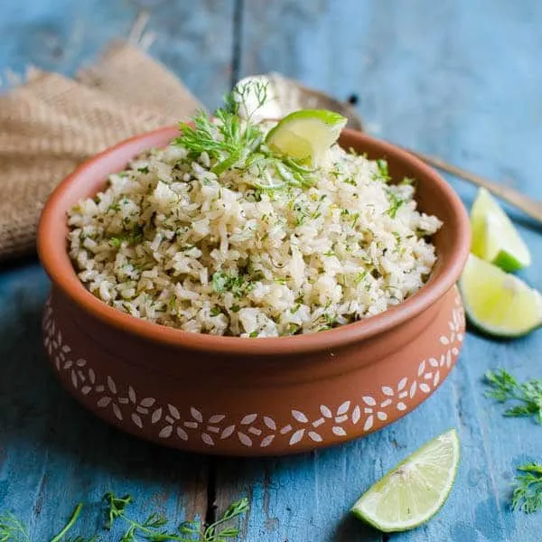

Lime Rice

Description
This is some of the best rice you will ever make. It taste good with basically anyhting that you would like to eat rice with
In this recipe you can make it really easy within 2 steps!!
Ingreadients
- 2 cups of water
- 1 cup of long grain white rice
- 1 tablespoon butter
- ½ cup chopped cilantro
- 2 tablespoons fresh lime juice
- 1 teaspoon lime zest
Directions
- Bring water to a boil in a small saucepan. Stir in rice and butter. Reduce heat to low, cover, and simmer until rice is tender, about 20 minutes.
- And server when hot! It's just as easy as that